section in PDF
manual in PDF


|
|
|
| |
| Get this section in PDF |
Get entire manual in PDF |
|
Chapter 5: Temporary Licenses
On some products, temporary licenses can be issued when an application is launched and no valid license file is found. A prompt appears asking the user to install a temporary license.
Temporary licenses are good for a limited number of days, then become invalid. They are installed using the IRU as with other license installations, and can be installed online or offline.
This chapter describes both online and offline temporary license installation:
Online Temporary License – Step by Step
Temporary license registration is initiated when the software product that requires the license is installed and run, but no valid license file is found. A prompt is displayed asking for user confirmation to install a temporary license. The temporary license registration process can be cancelled and invoked at a later time.
Make sure the network connectivity requirements discussed in Installation Scenarios are understood.
If the Installation Host is connected to the Internet (and to the lab network as well), an online registration can be performed. The steps in the online registration process are:
If the Installation Host is not attached to the Internet, follow the instructions in Offline Temporary License – Step by Step.
Figure 5-1 will help the user keep track of the steps in the online registration process. It is repeated at each step with the current operation highlighted.
Figure 5-1. Online Temporary License
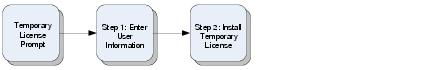
Accept the Temporary License Prompt
When attempting to use licensed software, and no valid license exists, a temporary license can be issued that allows the software to run for a limited number of days. A dialog similar to Figure 5-2 is displayed in this situation.
Figure 5-2. Temporary License Prompt
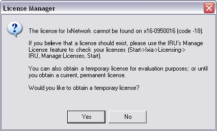
Step 1: Enter User Information
After selecting Yes, the first screen displayed is shown in Figure 5-3. If the Installation Host is not attached to the Internet, the screen shown in Figure 5-7 is displayed. Follow the instructions in Offline Temporary License – Step by Step.
Figure 5-3. Temporary License Step 1 – Registration Number
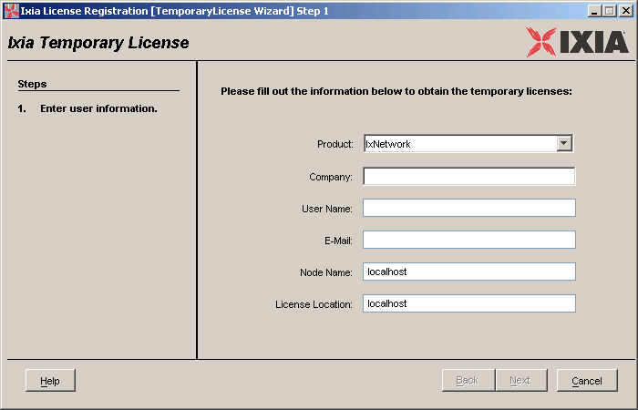
- Select the correct product from the pulldown list.
- Enter the Company, User Name, and E-mail address. The Node Name is the workstation or chassis where the licensed product is run. The License Location is where the license is going to be installed. It can be a hostname or IP address.
- A valid email address must be entered in the E-Mail field (for example, user@company.com). The email address must be one from the company that is licensing the software. No private email addresses (for example, user@gmail.com) are accepted.
- Press the Next button.
Step 2: Install the Temporary License
All the necessary information has been entered. A screen similar to the one shown in Figure 5-4 is displayed.
Figure 5-4. Temporary License Step 4 – Save License
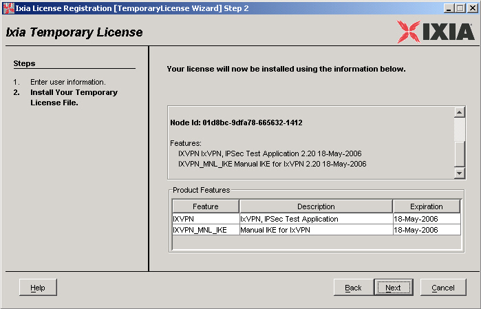
- Verify the information shown.
- Press the Next button to install the license. A license file (extension .lic) is installed in the chassis or workstation specified in Step 1: Enter User Information. The default installation directory is C:\Program Files\Ixia\licensing\licenses.
After the license has been installed, a Receipt is displayed, similar to the one shown Figure 5-5. This is a record of the license's registration. Save the information as a file or a printout.
Figure 5-5. Temporary License Step 3 – Receipt
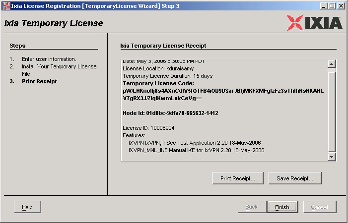
The license is now available for use on the chassis or workstation.
Offline Temporary License – Step by Step
The steps in the offline registration process are:
If the Installation Host is attached to the Internet, follow the instructions in Online Temporary License – Step by Step.
Figure 5-6 is designed to help keep track of the steps in the offline registration process. It is repeated at each step with the current operation highlighted.
Figure 5-6. Offline Temporary License
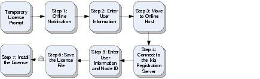
Step 1: Temporary License Confirmation
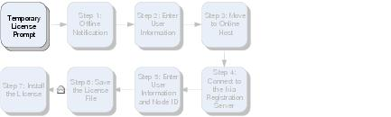
A dialog similar to the one discussed in Accept the Temporary License Prompt appears when the application is started, and there is no valid license. Select Yes to begin the Temporary License installation.
The first screen that displayed is shown in Figure 5-7. This message indicates that the Installation Host cannot reach the Ixia website via the Internet. If the Installation Host is connected, use the following steps to diagnose the problem.
If the Installation Host should be attached to the Internet
- Use a browser to go to any non-Ixia Internet page. If this fails, then there is a problem within the Installation Host.
- Use the browser to access Ixia's registration server at http://licensing.ixiacom.com. If this fails, then it might be the case that Ixia's server is down. Contact Ixia at the appropriate support center to confirm.
- If the Installation Host can access Ixia's registration server's web page, and the screen shown in Figure 5-7 still appears after restarting the license registration process, then either proceed with the steps in this section, or contact Ixia at the appropriate support center for assistance.
To proceed with offline temporary license registration
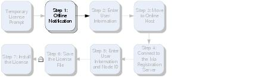
The dialog shown in Figure 5-7 is displayed when the Installation Host is not connected to the internet.
Figure 5-7. Offline Temporary License Step 1 – Offline Notice
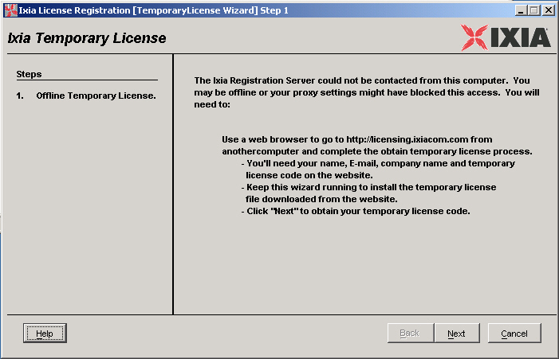
- Find a computer that is connected to the Internet. It is necessary to transfer small amounts of data between the Online Host (the computer connected to the Internet) and the Installation Host (the chassis or workstation running the IRU). A removable USB drive or a common e-mail system are two options.
- Press the Next button.
Step 2: Enter User Information
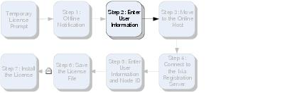
The next screen displayed is shown in Figure 5-8.
Figure 5-8. Offline Temporary License Step 2 – User Information
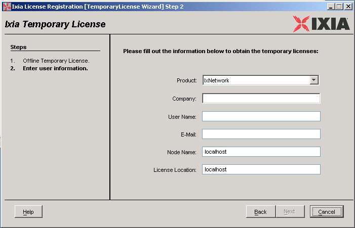
- Select the correct product from the pulldown list.
- Enter the Company, User Name, and E-mail address. The Node Name is the workstation or chassis where the licensed product is run. The License Location is where the license is going to be installed. It can be a hostname or IP address.
- A valid email address must be entered in the E-Mail field (for example, user@company.com). The email address must be one from the company that is licensing the software. No private email addresses (for example, user@gmail.com) are accepted.
- Press the Next button.
Step 3: Move to the Online Host
The next screen is shown in Figure 5-9.
Figure 5-9. Offline Temporary License Step 3 – Node ID Confirmation
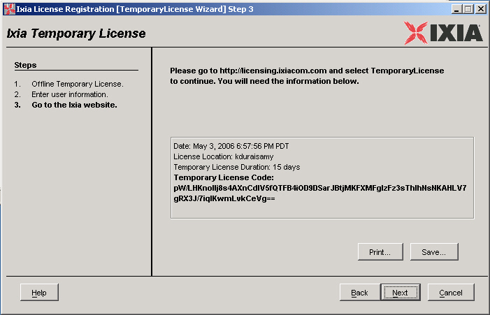
- The information on the screen is necessary to complete the registration on the Online Host. Either:
- Move to the Online Host, start a browser and enter http://licensing.ixiacom.com.
- Follow the instructions in:
- Do not press the Next button in this dialog yet.
Step 4: Online – Connect to the Ixia Registration Website
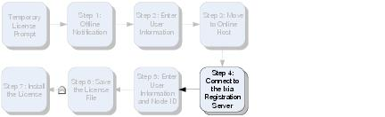
Enter the Ixia registration web address into a browser. The first online screen displayed is shown in Figure 5-10.
Figure 5-10. Offline Temporary License Step 4 – Ixia Registration Website
Step 5: Online – Enter User Information and Node ID
Figure 5-11. Offline Temporary License Step 5 – Enter User Information and Node ID
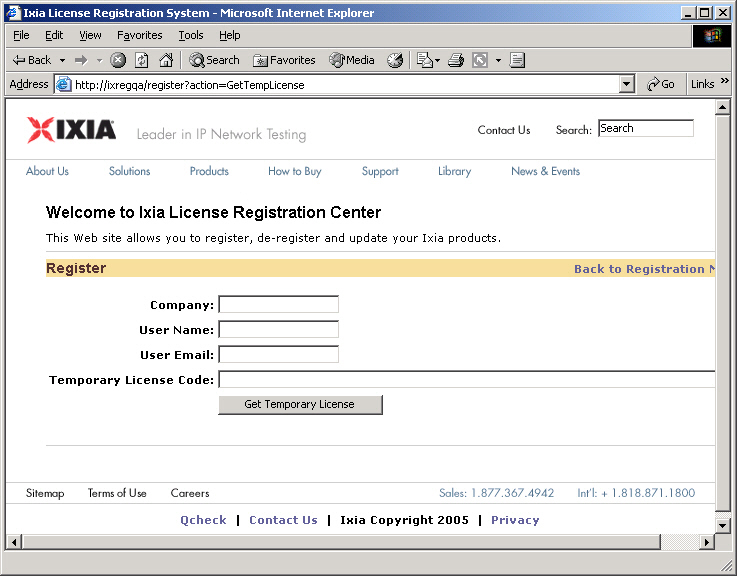
- Enter the Company, User Name, and E-mail address as done in Step 2: Enter User Information.
- A valid email address must be entered in the E-Mail field (for example, user@company.com)
- Enter the Temporary License Code, exactly as shown in Step 3: Move to the Online Host.
- Click the Get Temporary License button.
Step 6: Online – Save the License File
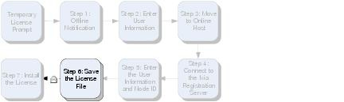
At this point, the actual Ixia license file (extension .lic) is downloaded to the Online Host. A dialog similar to that shown in Figure 5-12 is displayed.
Figure 5-12. Offline Temporary License Step 6 – Download License File
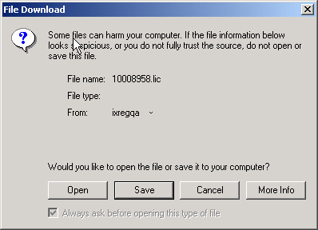
When finished, another dialog similar to the one shown in figure is displayed.
Figure 5-13. Offline Temporary License Step 6 – Download Complete
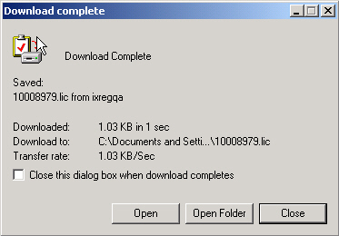
- To open the file, select the Open button. To open the folder where the file is located, select the Open Folder button. Otherwise select Close.
- Transfer this saved file over to the Installation Host via a removable USB drive or e-mail (if the Installation Host has e-mail capabilities). If a License Server is being used, then remember to save the file to the License Server (if it is a different chassis or workstation than the Installation Host). The recommended directory is C:\Program Files\Ixia\licensing\licenses.
Step 7: Install the License
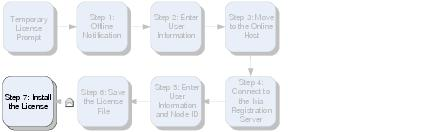
Return to the Installation Host. Press the Next button. A screen similar to the one shown in Figure 5-14 is displayed.
Figure 5-14. Offline Temporary License Step 7 – Save License
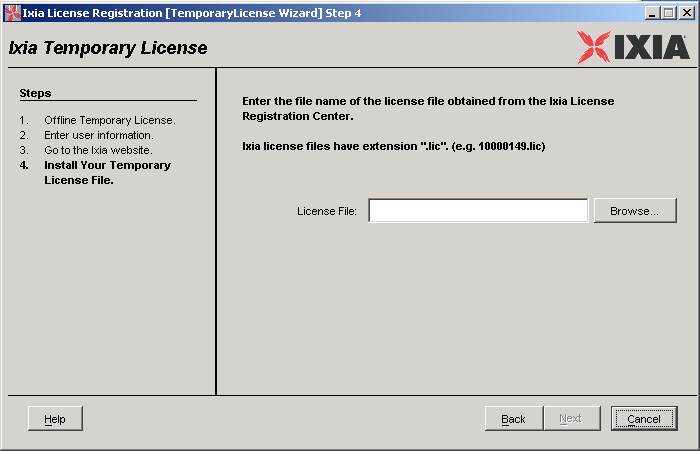
- Enter the filename of the license file that was copied from the Online Host as instructed in Step 6: Online – Save the License File. Use the Browse... button to help locate the file.
- Press the Next button to install the license.
After the license has been installed, a Receipt is shown (for example, Figure 5-15). This is a record of the license's registration. Save this as a file, or make a printout of this information.
Figure 5-15. Offline Temporary License Step 7 – Receipt
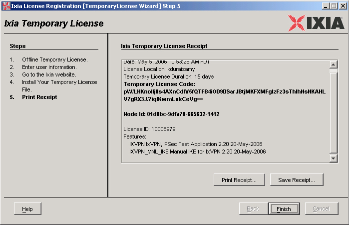
The license is now available for use on the chassis or workstation. If it is a single node-locked license, it can only be used on that particular chassis or workstation.
|
|
Did this document answer your question?
If not, let us know! |
|